Creador de contenido
Videos, reels, campañas y coberturas para marcas.
Ver mis trabajosPeriodista desde 2011 · Tecnología desde 2013
Periodista tecnológico, creador de contenido, conferencista y formador en inteligencia artificial.
Hoy cubro tecnología, innovación e inteligencia artificial en El Observador.
Trabajé con
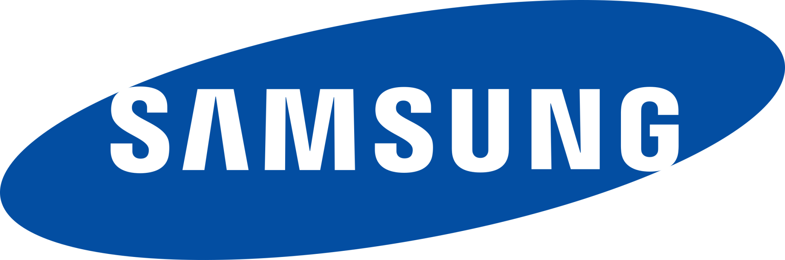

Videos, reels, campañas y coberturas para marcas.
Ver mis trabajosCharlas sobre tecnología e IA, conducción y moderación.
Conocer mi experienciaTalleres, curso online y asesoramiento personalizado.
Conocer las propuestasCurso online
De básico a avanzado, con tres meses de acompañamiento personalizado.
Sobre mí
Soy Juan Pablo De Marco, periodista uruguayo especializado en tecnología. Comencé mi carrera periodística en 2011 y desde 2013 me dedico especialmente a cubrir temas relacionados con tecnología, innovación y transformación digital.
Trabajé en El País y actualmente me desempeño como periodista especializado en tecnología en El Observador.
A lo largo de mi trayectoria entrevisté a referentes del sector tecnológico y cubrí temas vinculados a inteligencia artificial, ciberseguridad, innovación y el impacto de la tecnología en la sociedad.
Me interesa explicar temas complejos de manera sencilla y acercar la tecnología a públicos diversos. Esa misma mirada atraviesa mi trabajo como creador de contenido, conferencista y formador.
Medios en los que trabajé
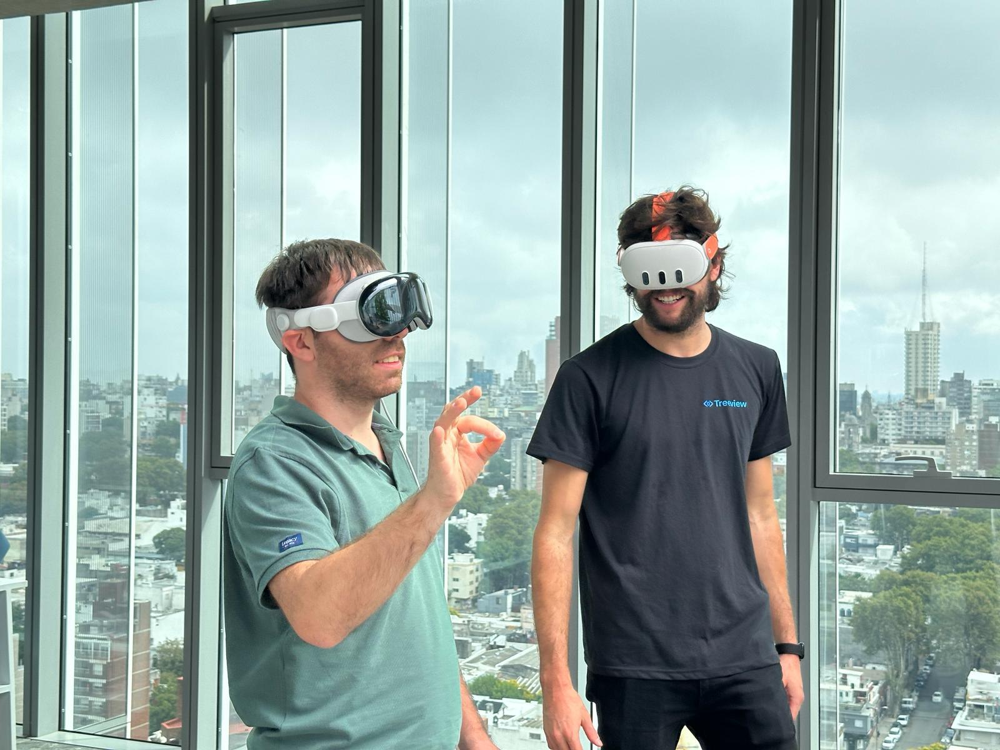
Artículos y entrevistas destacados
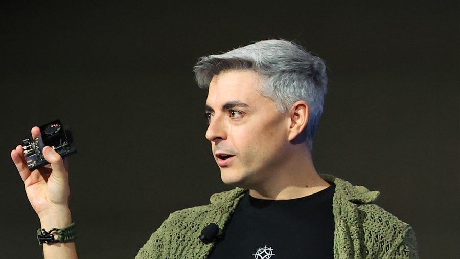
Entrevista sobre cómo incorporar la inteligencia artificial al trabajo diario y perderle el miedo.
Leer notaGuardián ganó entre más de 30 propuestas en Build101 y fue entrenada con modalidades de estafa conocidas en Uruguay.
Leer nota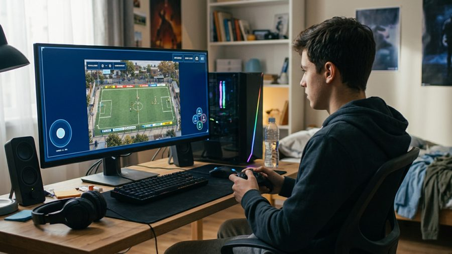
La inteligencia artificial abarató y aceleró la creación de videojuegos, y el fútbol se volvió uno de sus temas favoritos.
Leer notaCreador de contenido
Creo videos, reels, entrevistas y campañas para marcas y empresas, combinando mi experiencia periodística con los formatos y lenguajes de las plataformas digitales.
Desarrollo contenidos que buscan comunicar productos, servicios e ideas de una manera clara, cercana y atractiva para las audiencias.
Marcas con las que trabajé
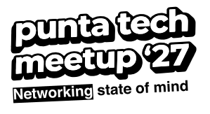
Trabajos destacados
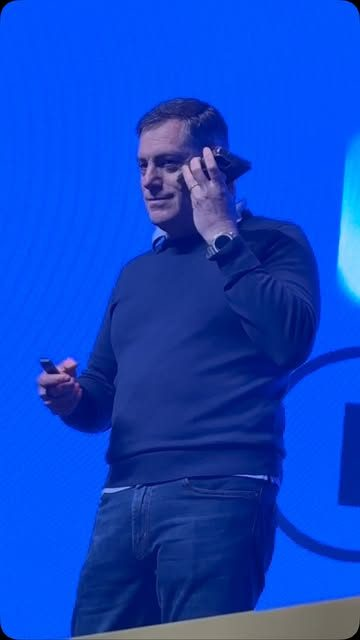
Cobertura de Mercado Libre Experience 2026: lo más relevante de sus 40 charlas, en un reel.
Ver publicaciónColaboración con cupones de descuento para comprar en Amazon, eBay y Walmart con precio final.
Ver publicaciónBreve descripción del trabajo. link pendiente
Ver publicación¿Querés que trabajemos juntos?Contactame para conversar sobre tu próxima campaña o proyecto de contenido.
ContactameConferencias y formación
Doy conferencias sobre inteligencia artificial, innovación y nuevas tecnologías, con especial atención a cómo estos cambios impactan en las personas, las empresas y el mundo del trabajo.
Mis presentaciones combinan actualidad, ejemplos concretos y demostraciones para acercar temas tecnológicos a públicos diversos.
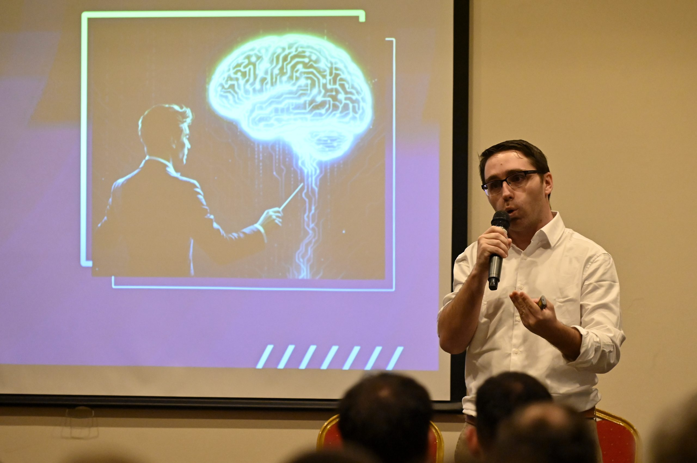
Charlas y talleres para
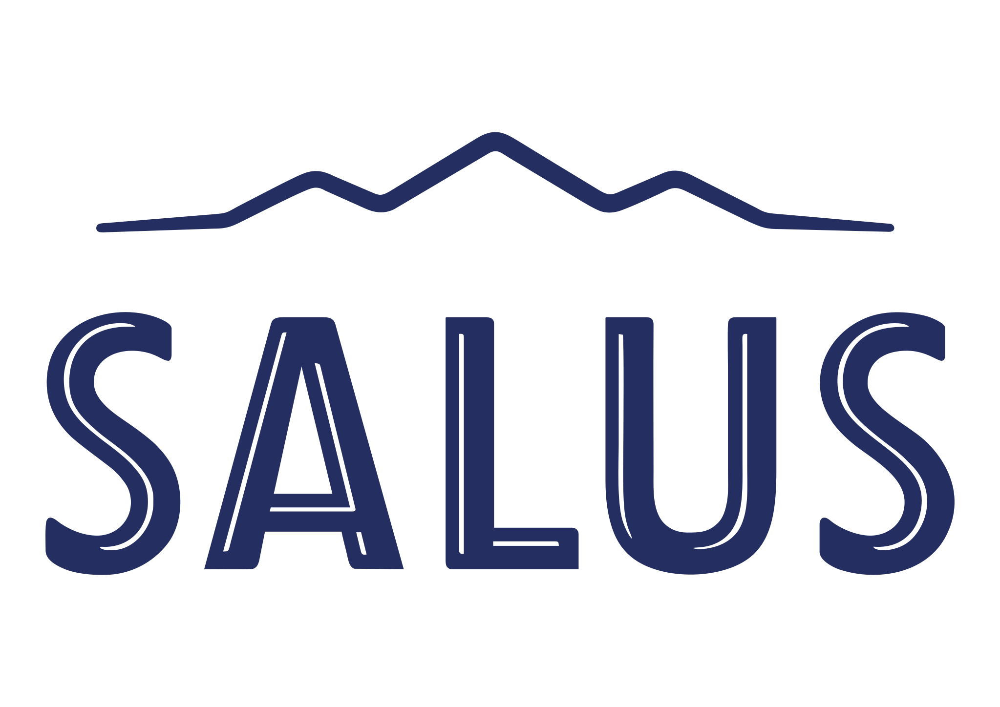
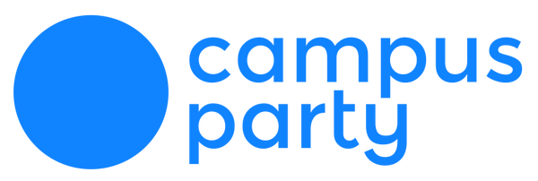
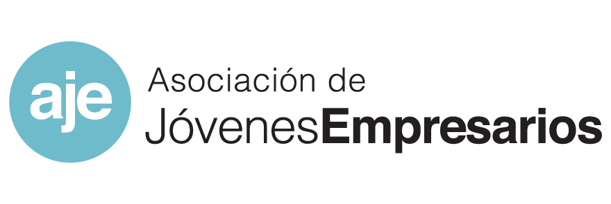
“La participación de Juan Pablo, estrenando su primera conferencia en nuestro Blockchain Summit Global, fue del alto nivel que todos esperábamos! […] La sala repleta y los comentarios luego, confirman su gran convocatoria y su condición de crack.”
¿Querés organizar una conferencia?Contactame para conversar sobre la temática, el público y las características del evento.
ContactameOfrezco talleres prácticos de inteligencia artificial para empresas, instituciones y grupos que quieren aprender a utilizar estas herramientas. Las capacitaciones se adaptan a los conocimientos y necesidades de los participantes.
Mi metodología: Hablar, Personalizar y Delegar.
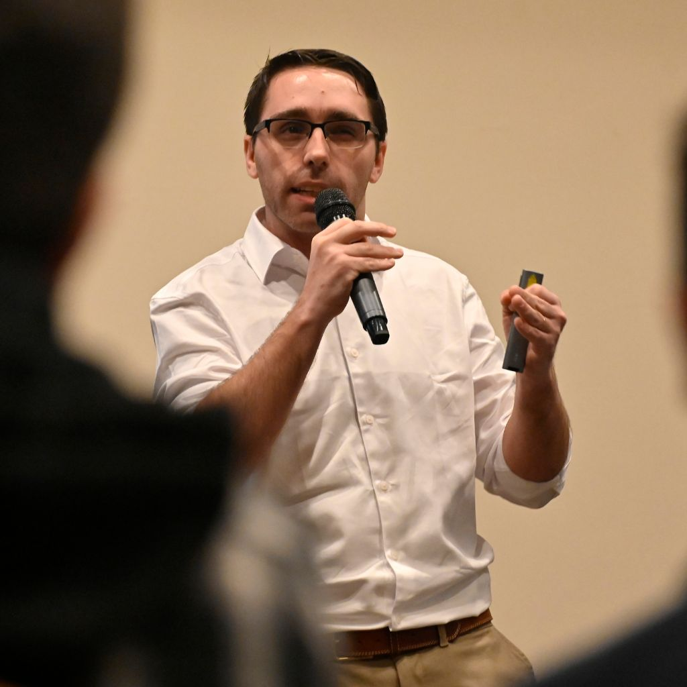
Aprender a comunicarse con la inteligencia artificial y obtener mejores resultados.
Adaptar las herramientas a las necesidades de cada persona y su forma de trabajar.
Descubrir cómo utilizar la inteligencia artificial para realizar tareas y simplificar procesos.
Esta metodología permite avanzar progresivamente desde los primeros pasos hasta usos más avanzados de la IA.
“Se disfruta mucho la forma en que compartes tus conocimientos.”
¿Querés organizar un taller para tu empresa o institución?Contactame para diseñar una capacitación adaptada a tu público.
ContactameLas personas mayores de 60 años son un público que me interesa especialmente y con el que ya tengo experiencia impartiendo talleres.
Creo que la inteligencia artificial puede ofrecer nuevas oportunidades para aprender, comunicarse, resolver situaciones cotidianas y desarrollar intereses personales.
Por eso, realizo talleres especialmente pensados para este público, con explicaciones paso a paso, ejemplos cercanos y espacio para realizar preguntas.
Mi objetivo es acercar estas herramientas de una manera accesible y demostrar que la inteligencia artificial también puede ser útil para las personas mayores.
¿Querés organizar un taller para mayores de 60 años?Contactame para conocer las posibilidades de capacitación.
ContactameParticipo como conductor de eventos corporativos, encuentros empresariales y actividades vinculadas a tecnología, innovación y otros temas de actualidad.
Mi experiencia periodística me permite presentar contenidos, conducir entrevistas y acompañar el desarrollo de eventos con un enfoque profesional y dinámico.
¿Buscás un conductor para tu evento?Contactame para conversar sobre la propuesta.
ContactameModero paneles, entrevistas y conversaciones en vivo, aportando mi experiencia periodística para facilitar el intercambio entre especialistas, empresarios y referentes de diferentes sectores.
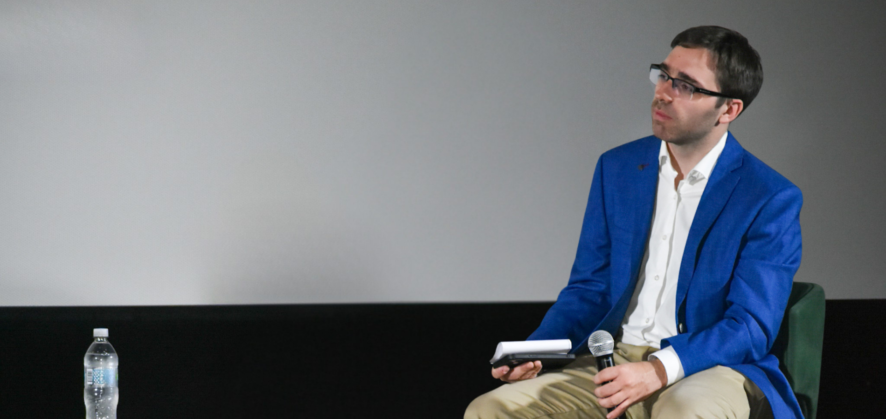
¿Necesitás un moderador para tu evento?Contactame para conversar sobre la temática y los participantes.
ContactameOfrezco asesoramiento para personas, profesionales y empresas que quieren comenzar a utilizar inteligencia artificial o aprovechar mejor las herramientas que ya conocen.
Trabajamos sobre necesidades concretas para identificar aplicaciones útiles, mejorar procesos y explorar nuevas formas de trabajar con IA.
El asesoramiento puede incluir aprendizaje de herramientas, personalización de asistentes y orientación para crear agentes de inteligencia artificial.
¿Querés recibir asesoramiento personalizado?Contactame y contame qué necesitás.
ContactameCurso online
Aprendé inteligencia artificial de básico a avanzado, con tres meses de acompañamiento personalizado.
Tu primer agente de IA es un curso online pensado para quienes quieren aprender a utilizar inteligencia artificial desde cero y avanzar hacia herramientas y funcionalidades más complejas. No necesitás conocimientos previos ni saber programar.
Clases en video para mirar a tu ritmo, cuando quieras y desde donde quieras.
Te acompaño durante el proceso de aprendizaje para ayudarte a avanzar y aplicar lo aprendido.
Durante tres meses podés escribirme para realizar todas las consultas que necesites, resolver dudas y recibir orientación personalizada.
Un recorrido progresivo para utilizar herramientas de IA y avanzar hacia la creación de tu primer agente.
Además de acceder al contenido, contás conmigo durante tres meses para acompañarte en el aprendizaje. La idea es que no te quedes solamente con la teoría, sino que puedas incorporar estas herramientas a tu vida cotidiana y profesional.
Contacto
¿Querés crear contenido para tu marca, organizar una conferencia, capacitar a tu equipo o aprender a utilizar inteligencia artificial? Contactame y conversemos sobre tu propuesta.